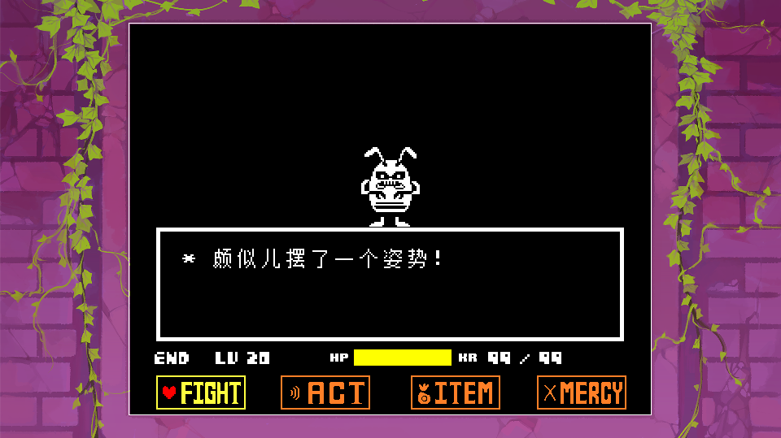

Border
Perhaps you have played or seen works like Undertale BNP.
Besides a centered game screen, their game also has a ring of outer border.
Border library location: Scripts/Libraries/Utils/Border.lua

Two Modes (BORDER_MODE)¶
conf.lua uses BORDER_MODE to decide which pair of dimensions the window takes; love.conf only performs the choice once:
LOGICAL_WIDTH, LOGICAL_HEIGHT = 640, 480 -- window size with BORDER_MODE off
BORDER_WIDTH, BORDER_HEIGHT = 960, 540 -- window size with BORDER_MODE on
BORDER_MODE = true
-- inside love.conf
t.window.width = BORDER_MODE and BORDER_WIDTH or LOGICAL_WIDTH
t.window.height = BORDER_MODE and BORDER_HEIGHT or LOGICAL_HEIGHT
BORDER_MODE |
Window size | Where the screen goes | Around the screen |
|---|---|---|---|
false |
LOGICAL_WIDTH × LOGICAL_HEIGHT, i.e. 640×480 |
Scaled by SCREEN_SCALE and placed in the window |
No border art, only an outline |
true (default) |
BORDER_WIDTH × BORDER_HEIGHT, i.e. 960×540 |
Placed in the border art's opening; by default a centered 640×480 area at offset (160, 30) |
An outline until the border is enabled, then the border art |
The two modes only change the window size and the layout reference. The canvas is always CANVAS_WIDTH × CANVAS_HEIGHT, and in-game coordinates are unaffected by the window size, so scene code does not need to branch on the mode.
BORDER_MODE only sets the window size at startup; changing the variable at runtime does not recreate the window. When the window size changes at runtime (for example F4 fullscreen), the engine re-fits the border art to the current window, so the screen and the frame never fall out of alignment.
The Outline Placeholder¶
BORDER_MODE = true does not mean the border art is drawn. The art needs Border.enabled to be true and Border.Draw to obtain an image (it falls back to ruins when SetImage was never called). Until then, love.draw in main.lua draws an outline around the screen:
if (BORDER_MODE) then
Border.Draw()
end
SE.graphics.push()
SE.graphics.translate(DrawX, DrawY)
SE.graphics.scale(ScreenScale, ScreenScale)
SE.graphics.setColor(1, 1, 1, 1)
SE.graphics.draw(source)
if (BORDER_MODE and not Border.enabled) then
local r, g, b = unpack(Global.GetVariable("MainColor") or {1, 1, 1})
SE.graphics.setColor(r, g, b, 1)
SE.graphics.setLineWidth(2)
SE.graphics.rectangle("line", -1, -1, 642, 482)
SE.graphics.setColor(1, 1, 1, 1)
end
SE.graphics.pop()
The default startup screen is therefore: a 960×540 window, a 640×480 game screen in the middle, and border art around it. With the border disabled, the same screen sits inside a 2px outline on black. That outline is a placeholder for "border not in place yet"; it is not part of the border art, and it only appears while Border.enabled is false.
The visible state is decided by Border.enabled together with Border.alpha:
enabled |
alpha |
Screen |
|---|---|---|
false |
any value | Outline |
true |
greater than 0 | Border art |
true |
0 | No decoration |
main.lua calls Border.SetEnabled(true) and Border.FadeIn(0) at startup and picks the Snowdin frame with Border.SetImage("snowy.png") in love.load, so the default screen is the 640×480 game screen inside the border art, faded in over about one second. FadeIn treats a non-positive duration as one second; use Border.SetAlpha(1) for an instant border. Call Border.SetEnabled(false) to go back to the outline.
The line follows the main colour
Its colour comes from MainColor (see conf_pure.lua, default {1, 1, 1}), the same value used by the battle box and most other elements. For an AU such as Underfell, setting the main colour to pink tints this line as well.
Border.FadeOut sets enabled to false when it finishes, so a finished fade-out returns to the outline. To stay undecorated after fading out, call Border.SetEnabled(true) once more afterwards ( alpha is already 0 at that point).
Registering a Border¶
The engine ships seven border images in Resources/Sprites/Border/, all 960×540 with a 640×480 opening at (160, 30), which matches the auto-centered calculation:
idleA handheld-console frame with a 1px white line around the screen area.ruinsRuins.snowySnowdin.waterfallWaterfall.hotlandHotland.newhomeNew Home.truelabThe True Lab.
Everything except idle comes from the original UNDERTALE PS4 border set, one per area; snowy is the frame the engine starts with.
Use Border.RegisterImage(name, path) to register a border, then refer to it by name.
nameThe border's code name.pathThe border's path, counted from theResources/Sprites/Border/folder.
SetImage also accepts a direct path; an unregistered path is loaded as is:
Border.RegisterImage("snow", "user/snow.png")
Border.SetImage("snow")
Border.SetImage("user/other.png") -- skip registration, load directly
A custom border image needs three things: the same aspect ratio as BORDER_WIDTH × BORDER_HEIGHT, a 640×480 screen area in the middle, and opaque surroundings. When the opening is not centered, point to its top-left corner with Border.SetOpening(x, y).
Enabling the Border¶
Border.SetImage("ruins") -- choose the art
Border.SetEnabled(true) -- enable it; the outline disappears
Border.FadeIn(1) -- 1 second fade-in
Border.Draw is not called when BORDER_MODE = false, so enabling the border shows nothing in that mode.
Other functions
SetAlpha(a)Sets the opacity, 0–1; fades are implemented by changing this value.FadeOut(dur)Fades out overdurseconds, then callsSetEnabled(false)automatically.SetOpening(x, y)Manually sets the top-left pixel coordinate of the opening, measured from the art's top-left corner.GetOpening(imgW, imgH)Returns the opening's offset from the art's top-left corner. When not set manually it is computed by centering the canvas, i.e.((artW − CANVAS_WIDTH) / 2, (artH − CANVAS_HEIGHT) / 2).
The art shares the same ScreenScale and DrawX / DrawY offset as the canvas, so it stays in sync under scaling and fullscreen. With BORDER_MODE = true, SCREEN_SCALE fits BORDER_WIDTH × BORDER_HEIGHT rather than the canvas size; see Canvas & Screen for details.
Other Operations¶
If you want to draw something else in the border area, modify the Border.Draw function, but note you can only use love2d's official drawing methods; see With LOVE Development → Graphics for details.